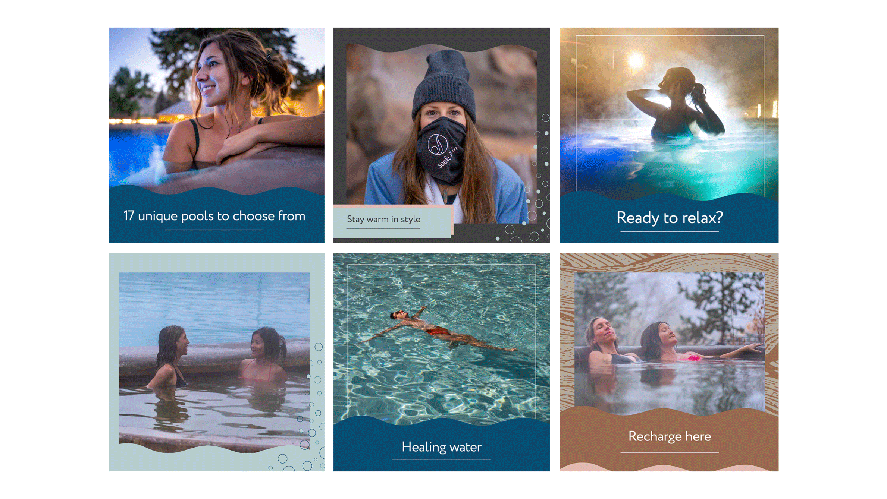
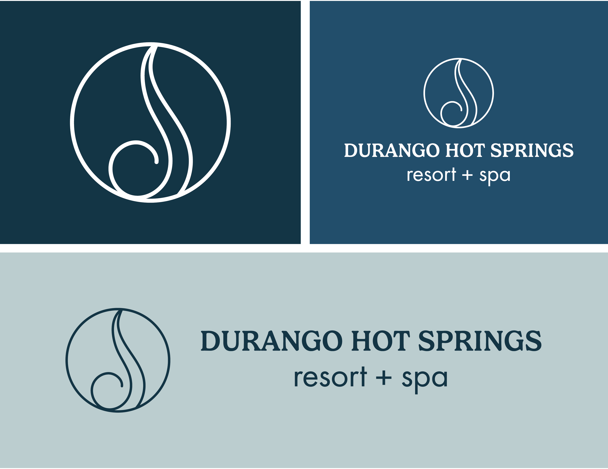
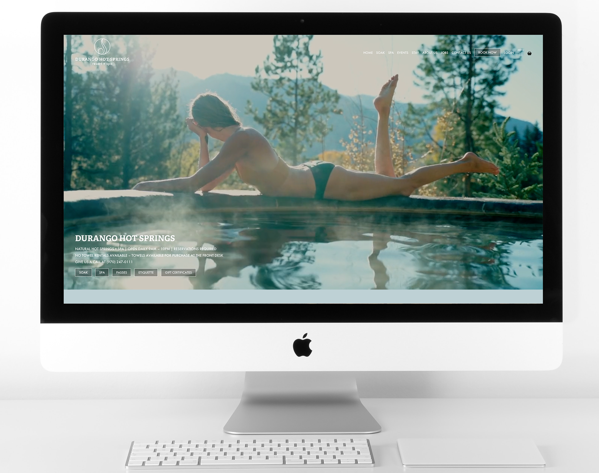
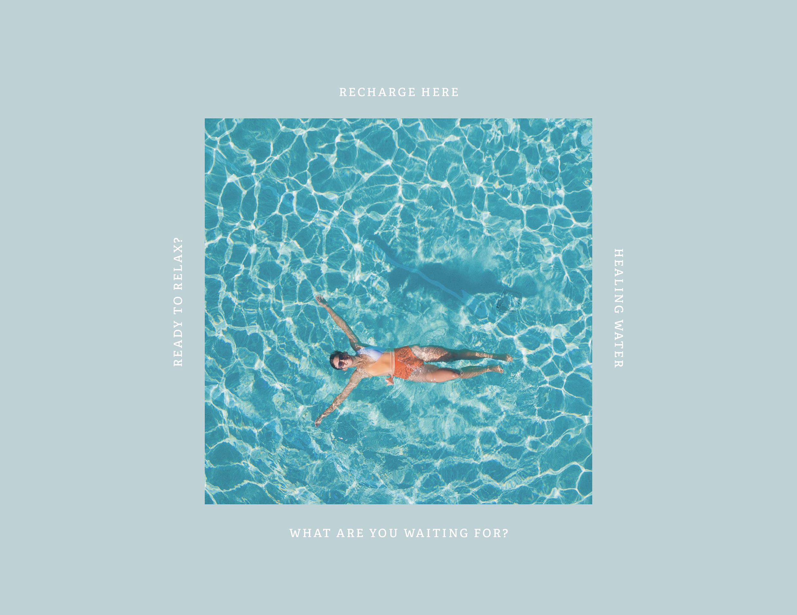

GOAL: The Durango Hot Springs is known for both the healing properties of its mineral water and the peaceful environment it provides visitors. After completing a major renovation of the grounds and facilities, the business needed a refreshed brand identity that reflected its upgraded experience and expanded spa offerings. The goal was to modernize the brand while positioning the hot springs as the ideal destination after a day of skiing and outdoor recreation.
ROLE: While working at BCI Media, a marketing firm in southwest Colorado, I served as the lead designer on the rebrand. I was responsible for developing the updated visual identity and marketing materials while collaborating with a broader team to bring the new brand to life across digital and physical channels.
PROCESS: The project involved refreshing the logo, typography, color palette, and supporting marketing assets to better reflect the serene and restorative experience of the hot springs. I worked closely with a photographer on visual direction for brand photography, collaborated with a developer on website design implementation, and coordinated with social media and marketing teams to ensure the new identity was consistently applied across all touchpoints. In addition to brand development, we created a marketing campaign to promote annual passes, punch passes, and the newly expanded spa services. The campaign positioned the hot springs as a relaxing destination for both locals and visitors looking to unwind.
OUTCOME: Within the first six months of the rebrand launch, the campaign significantly exceeded the client's sales goals. The original target of selling 150 annual passes and 150 punch passes was surpassed with 224 annual passes and 187 punch passes sold, demonstrating the effectiveness of the refreshed brand and coordinated marketing strategy.


